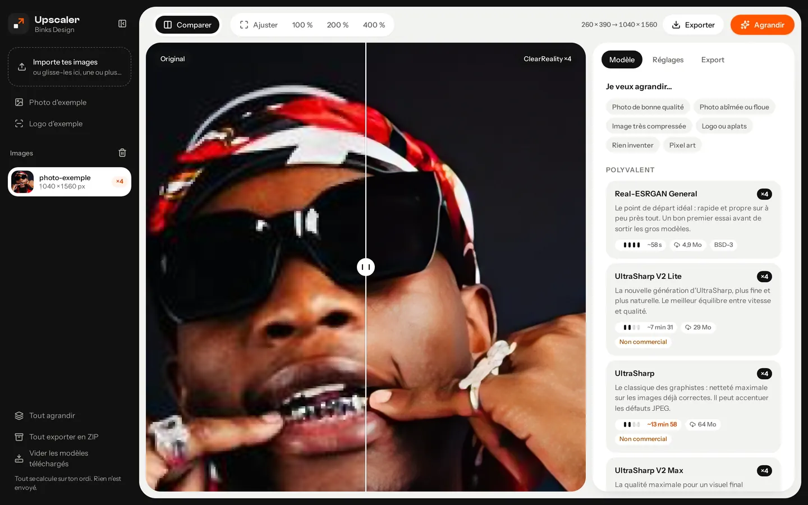
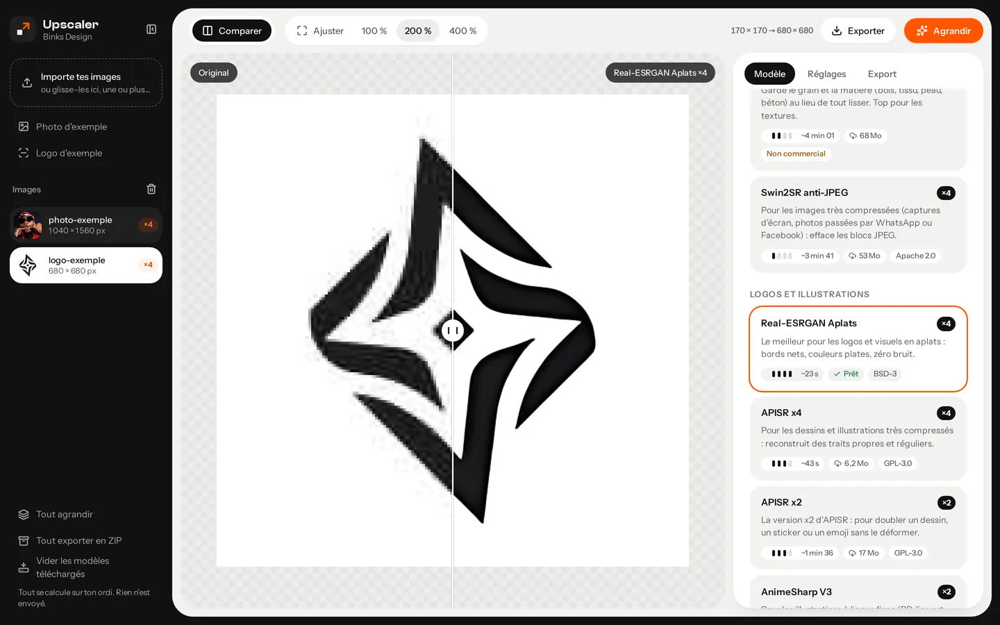
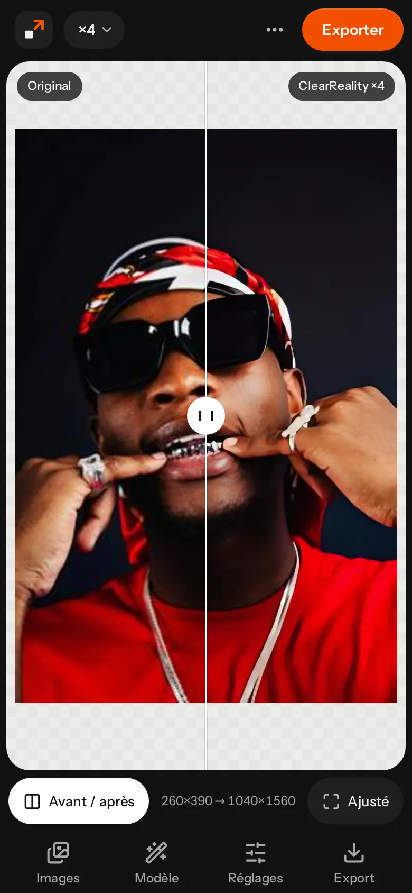
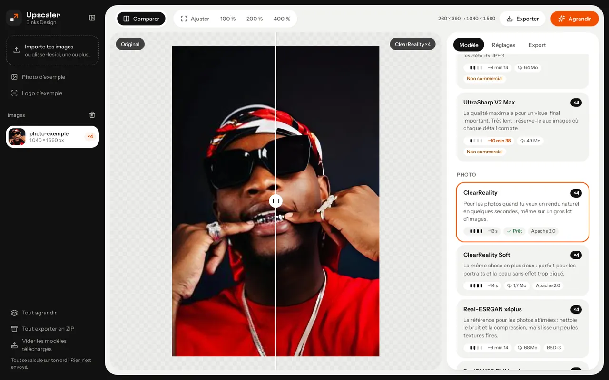
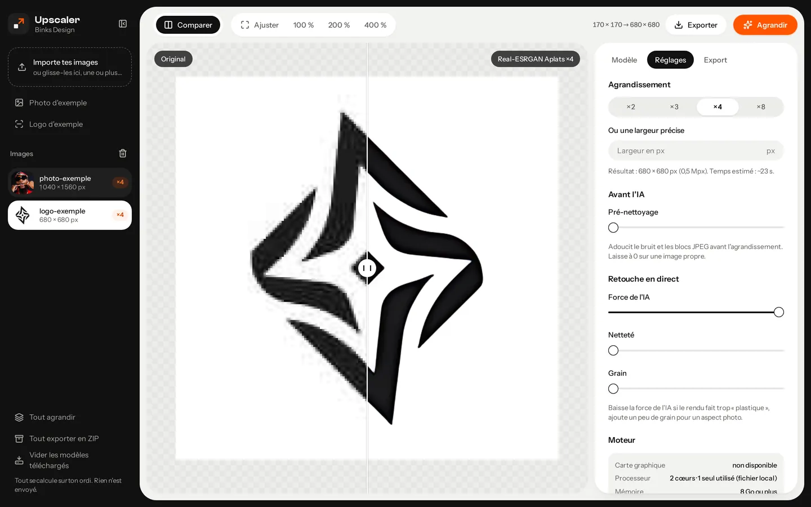
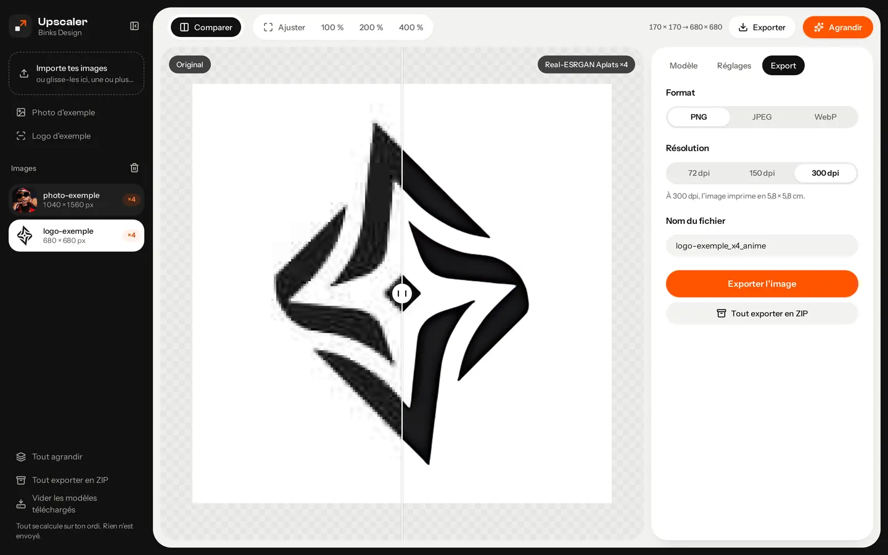
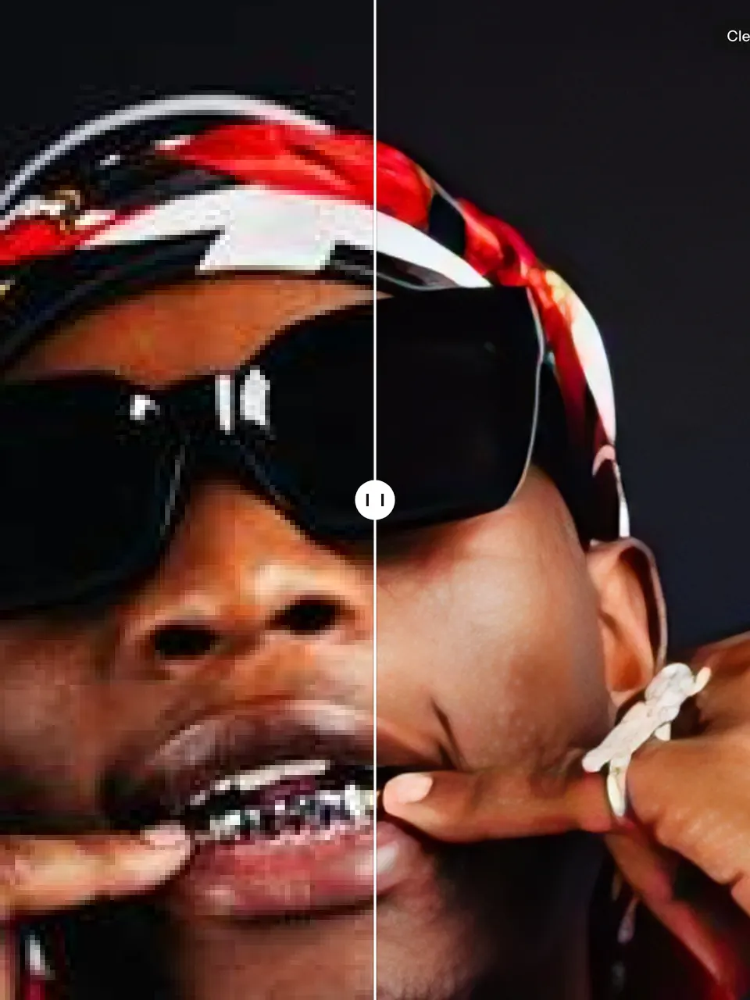
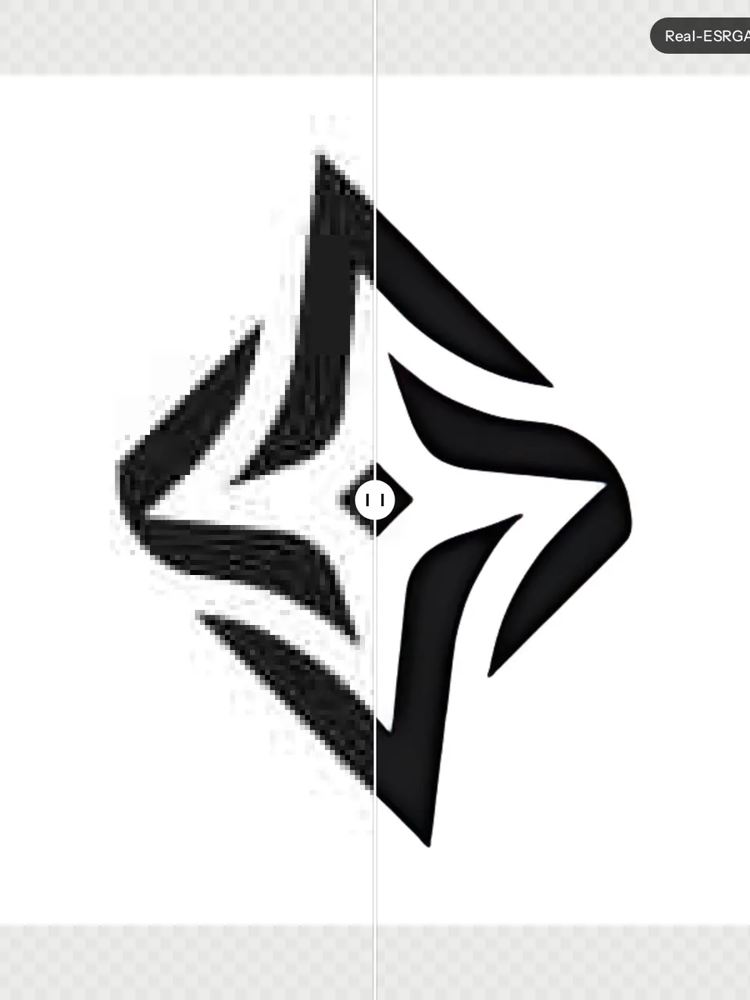
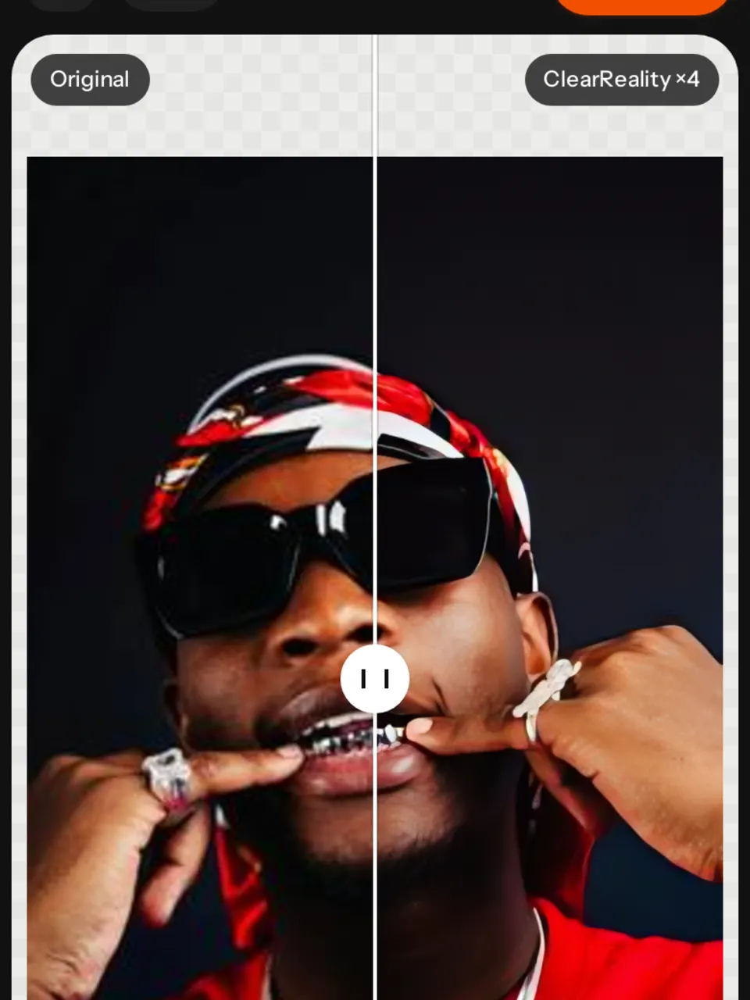
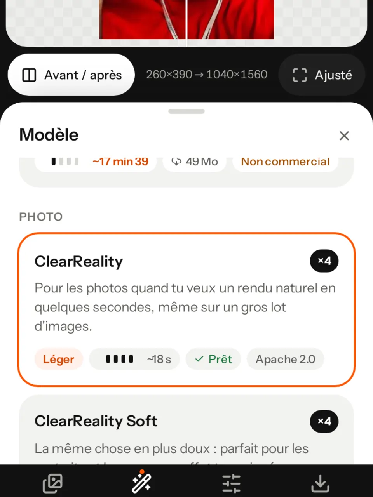

Pour les graphistes · gratuit, sans compte, tes images restent sur ton ordi
Agrandis. Sans flou, jusqu’à ×8.
Une photo trop petite pour l’impression, un logo récupéré en 200 px, une illustration pixelisée ? Choisis parmi 16 modèles d’IA — Real-ESRGAN, UltraSharp, ClearReality, RealPLKSR… — compare avant/après, dose la retouche et exporte en PNG, JPEG ou WebP. Le calcul tourne dans ton navigateur.
Pas d’image sous la main ? L’app propose une photo et un logo d’exemple.Quel modèle choisir



- 16modèles d’IA, plus Bicubique et Pixel art
- ×8au maximum, ou une largeur précise en px
- 3formats d’export : PNG, JPEG, WebP
- 0image envoyée sur un serveur
Quatre étapes,une image nette.
Pas de compte, pas d’installation : tout se passe dans une seule page. Tes réglages sont mémorisés dans le navigateur.
Importe une ou plusieurs images
Bouton, glisser-déposer ou collage (Ctrl/Cmd + V). Tout format d’image que ton navigateur sait lire ; la transparence est gérée.
Choisis un modèle
Un petit guide « Je veux agrandir… » te propose le bon modèle selon ton image : photo propre, photo abîmée, logo, pixel art…
Agrandis et compare
×2, ×3, ×4, ×8 ou une largeur précise. Le résultat s’affiche avec un curseur avant/après, zoom jusqu’au pixel.
Retouche et exporte
Force de l’IA, netteté et grain se règlent en direct, sans relancer le calcul. Export PNG, JPEG ou WebP, à 72, 150 ou 300 dpi, ou tout en ZIP.
Le bon modèle,pour chaque cas.
Chaque modèle a sa spécialité. Le poids, la vitesse sur ton matériel et la licence sont affichés sur sa carte. Un modèle se télécharge une seule fois, puis reste dans ton navigateur.

Photo · ClearReality Logo · Real-ESRGAN Aplats 
Réglages 
Export
- 01Photo de bonne qualité — UltraSharp V2 Lite
- 02Photo abîmée ou floue — Nomos2
- 03Image très compressée — Swin2SR anti-JPEG
- 04Logo ou aplats — Real-ESRGAN Aplats
- 05Rien inventer — RealPLKSR Fidèle x4
- 06Pixel art — Pixel art (sans IA)
Polyvalent ├─ Real-ESRGAN General ×4 · 4,9 Mo ├─ UltraSharp V2 Lite ×4 · NC ├─ UltraSharp ×4 · NC └─ UltraSharp V2 Max ×4 · NC Photo ├─ ClearReality · Soft ×4 · 1,7 Mo ├─ Real-ESRGAN x4plus · Nomos2 ├─ RealPLKSR Fidèle ×4 · ×2 ├─ Remacri ×4 · NC └─ Swin2SR anti-JPEG Logos et illustrations ├─ Real-ESRGAN Aplats · APISR ×4 · ×2 └─ AnimeSharp V3 ×2 · NC Sans IA └─ Bicubique · Pixel art instantané
Tu gardesla main.
L’IA propose, tu décides. Tout ce qui suit le calcul se règle en direct sur la carte graphique, sans tout recalculer.
- Avant / après
Compare au pixel près
Un curseur à glisser sur l’image.
- Contre l’original ou un autre résultat
- Jusqu’à 4 résultats gardés par image
- Ajuster, 100 %, 200 %, 400 %
- Molette, double-clic, glisser
- Avant l’IA
Prépare l’image
Pour les fichiers fatigués.
- Pré-nettoyage du bruit et des blocs JPEG
- Transparence : bords nets (IA) ou rapide
- Pas de halo autour des zones transparentes
- Retouche en direct
Dose le résultat
Si le rendu fait trop « plastique ».
- Force de l’IA (mélange avec le bicubique)
- Netteté
- Grain, pour un aspect photo
- Export
Prêt pour l’imprimeur
Une image ou tout le lot.
- PNG, JPEG ou WebP (qualité 50–100)
- 72, 150 ou 300 dpi inscrits dans le fichier
- Taille d’impression en cm affichée
- Tout exporter en ZIP
Plusieurs passes : un modèle ×4 qui doit atteindre ×8 fait deux passes, un modèle ×2 en fait trois. L’app te prévient et estime le temps. Pour ×3 ou une largeur précise, elle agrandit avec le modèle puis réduit proprement à la taille demandée.

PhotoClearReality ×4 
LogoReal-ESRGAN Aplats ×4 
MobileAvant / après 
MobileModèles légers
Ta machinefait le travail.
Upscaler mesure ton matériel et choisit le moteur le plus rapide. Tu peux toujours reprendre la main dans Réglages → Moteur.
Carte graphique (WebGPU)
Le plus rapide quand ton navigateur le permet. Si elle cale, l’app bascule seule sur le processeur et continue.
Processeur (WebAssembly)
Marche partout, plus lentement. Le calcul tourne en arrière-plan : l’interface reste fluide.
Mini-test au premier lancement
Quelques secondes sur une petite tuile pour estimer les temps de chaque modèle sur ta machine. Tu peux le refaire.
Calcul par tuiles
L’image est traitée morceau par morceau (taille Auto, 64 à 384 px) pour tenir en mémoire, avec une barre de progression et un bouton Annuler.
Tes imagesrestent chez toi.
Les fichiers de tes clients ne partent nulle part : l’IA tourne dans ton navigateur, sur ton ordi ou ton téléphone.
Aucun compte, aucune clé
Pas d’inscription, pas d’API payante. Tes réglages sont mémorisés dans ton navigateur, et nulle part ailleurs.
Calculé sur place
Aucune image n’est envoyée sur un serveur. Ce qui se télécharge, c’est l’inverse : le moteur et les modèles viennent chez toi.
Modèles téléchargés une fois
De 1,7 à 69 Mo selon le modèle, depuis Hugging Face, puis gardés dans ton navigateur. Un bouton les supprime quand tu veux.
Pilotablepar un agent.
Claude Code, Codex ou tout agent qui pilote un navigateur peut agrandir tes images à ta place, en cliquant dans l’interface : chaque commande a un identifiant stable.
- Pas d’API publique : un parcours pas à pas avec les vrais sélecteurs (
#file,#runBtn,#exportOne…). - Aucune clé API, aucun service à brancher : l’agent travaille dans la page.
- Règle d’or : l’agent agrandit tes fichiers, il ne les redessine pas et n’en invente pas.
await page.goto('http://127.0.0.1:8000/app.html');
await page.setInputFiles('#file', 'photo.jpg');
await page.click('.m-card[data-id="clear"]');
await page.click('#factorSeg button:has-text("×4")');
await page.click('#runBtn');
// attendre le toast « Terminé en … »
const dl = page.waitForEvent('download');
await page.click('#exportBtn');
await (await dl).saveAs('photo_x4_clear.png');Trois façonsde commencer.
Commence par un modèle rapide (Real-ESRGAN General ou ClearReality) : quelques secondes suffisent pour juger.
- Avec tes fichiers
Agrandir mes images
Importe ou glisse une ou plusieurs images, choisis un modèle, agrandis.
Ouvrir l’app - Pour voir le résultat
La photo d’exemple
Dans l’app, clique « Essayer avec l’exemple » ou « Photo d’exemple », puis Agrandir.
Essayer - Pour un logo
Le logo d’exemple
Clique « Logo d’exemple » : l’app choisit Real-ESRGAN Aplats, fait pour les bords nets.
Conseils logos